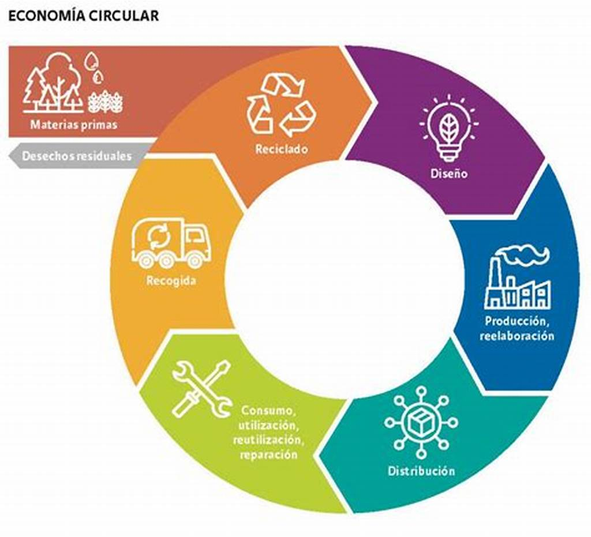

Introduccion
¡Bienvenidos a nuestra página dedicada al proyecto de economía circular! Aquí encontrarás información y recursos sobre cómo implementar este enfoque innovador en la gestión de recursos y residuos. Descubre cómo la economía circular busca maximizar el valor de los productos, materiales y recursos, al tiempo que minimiza los residuos y el impacto ambiental. Únete a nosotros en este viaje hacia un futuro sostenible y descubre cómo podemos transformar nuestra economía hacia un modelo más circular.
Objetivos
- objetivo 1: Informar y educar: Nuestro objetivo es proporcionar información clara y concisa sobre los principios y beneficios de la economía circular, con el fin de aumentar la conciencia y comprensión general sobre este enfoque.
- objetivo 2: Promover la adopción: Queremos fomentar la adopción de prácticas y modelos de negocio circulares, tanto a nivel individual como empresarial. Proporcionaremos recursos, guías y ejemplos para ayudar a las personas y organizaciones a implementar estrategias circulares.
- objetivo 3: Conectar a la comunidad: Deseamos crear un espacio de encuentro para profesionales, emprendedores, académicos y entusiastas de la economía circular. Facilitaremos el intercambio de conocimientos, experiencias e ideas a través de foros, eventos y redes sociales.
Casos de exito de la economia circular
- caso 1: Proyectos e iniciativas circulares implementadas en diferentes organizaciones del país.
- caso 2: Utilización de botellas de plástico, algodón reciclado, neumáticos y redes de pesca para crear productos sostenibles.
- caso 3: Experiencia en financiamiento de inversiones de economía circular en Colombia.

Beneficios de la economía circular
- Beneficios 1: Reducción de la dependencia de las materias primas.
- Beneficios 2: Generación de ventajas económicas, como aumento del PIB, mayor innovación tecnológica y ahorro neto de costes.
- Beneficios 3: Protección del medio ambiente, beneficio para la economía local, fomento del empleo y promoción de la independencia de recursos.